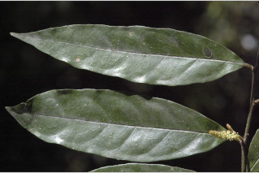
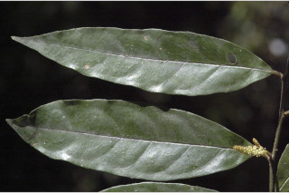
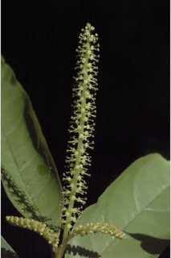
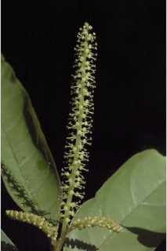

Trees up to 5 m tall.
5 ಮೀ. ಎತ್ತರದವರೆವಿಗೆ ಬೆಳೆಯುವ ಮರಗಳು.
5 മീറ്റര്വരെ ഉയരമുളള മരങ്ങള്.
மரங்கள், 5 மீ. உயரம் வரை வளரக்கூடியது
Young branchlets terete, slightly pubescent.
ಕಿರುಕೊಂಬೆಗಳು ದುಂಡಾಗಿದ್ದು ಸ್ವಲ್ಪ ಮಟ್ಟಿಗೆ ರೋಮರಹಿತವಾಗಿರುತ್ತವೆ.
ലഘുവായി രോമിലമായ, ഉരുണ്ട ഇളം ഉപശാഖകള്.
Leaves simple, alternate, spiral; petiole ca. 0.5 cm long; lamina 7-18 x 1.5-4 cm, elliptic-oblong to lanceolate, apex acuminate, base acute to obtuse, glabrous and sometimes shining and dark green above; midrib canaliculate above; secondary_nerves 5-8 pairs, looped; tertiary_nerves reticulate.
ಎಲೆಗಳು ಸರಳವಾಗಿದ್ದು,ಪರ್ಯಾಯ ಮತ್ತು ಸುತ್ತು ಜೋಡನಾ ಮಾದರಿಯಲ್ಲಿರುತ್ತವೆ.ಎಲೆ ತೊಟ್ಟುಗಳು ಅಂದಾಜು 0.5 ಸೆಂ.ಮೀ. ಉದ್ದವಿರುತ್ತವೆ; ಪತ್ರಗಳು 7-18 X 1.5 -4 ಸೆಂ ಮೀ. ವರೆಗಿನ ಗಾತ್ರ; ಅಂಡವೃತ್ತ- ಚತುರಸ್ರದಿಂದ ಭರ್ಜಿವರೆಗಿನ ಮಾದರಿಯ ಆಕಾರ, ಕ್ರಮೇಣ ಚೂಪಾಗುವ ತುದಿ, ಚೂಪಾದುದರಿಂದ ಹಿಡಿದು ಚೂಪಲ್ಲದವರೆಗಿನ ಬುಡ, ರೋಮರಹಿತವಾದ ಮೇಲ್ಮೈಹೊಂದಿರುತ್ತವೆ ಹಾಗೂ ಕೆಲವು ವೇಳೆ ಪತ್ರದ ಮೇಲ್ಭಾಗ ಹೊಳಪು ಹೊಂದಿದ್ದುಕಡು ಹಸಿರು ಬಣ್ಣವನ್ನು ಹೊಂದಿರುತ್ತದೆ; ಮಧ್ಯ ನಾಳ ಪ್ತರದ ಮೇಲ್ಭಾಗದಲ್ಲಿ ಕಾಲುವೆ ಗೆರೆ ಸಮೇತವಾಗಿರುತ್ತದೆ;ಎರಡನೇ ದರ್ಜೆಯ ನಾಳಗಳು 5 ರಿಂದ 8 ಜೋಡಿಗಳಿದ್ದು ಕುಣಿಕೆಗೊಂಡಿರುತ್ತವೆ; ಮೂರನೇ ದರ್ಜೆಯ ನಾಳಗಳು ಜಾಲಬಂಧ ನಾಳ ವಿನ್ಯಾಸ ಹೊಂದಿರುತ್ತವೆ.
ലഘുവായ ഇലകള്, ഏകാന്തരക്രമത്തില്, സര്പ്പിളമായി അടുക്കിയിരിക്കുന്നു; ഇലഞെട്ടിന് ഏതാണ്ട് 0.5 സെ.മീ നീളം; പത്രഫലകത്തിന് 7 സെ.മീ മുതല് 18 സെ.മീ വരെ നീളവും 1.5 സെ.മീ മുതല് 4 സെ.മീ വരെ വീതിയും, ദീര്ഘവൃത്തീയ - ആയതാകാരം തൊട്ട് കുന്താകാരം വരെയുമാണ്, പത്രാഗ്രം ദീര്ഘമാണ്, പത്രാധാരം നിശിതം തൊട്ട് ഉപകോണാകാരം വരെയാണ്, അരോമിലം മുകളില് ചിലപ്പോള് തിളങ്ങുന്നതും കടുംപച്ചനിറത്തിലുമാണ്; മുഖ്യസിരമുകളില് ചാലുളളതാണ്, കമാനം തീര്ക്കുന്നു; 5 മുതല് 8 വരെ ജോഡി ദ്വിതീയ ഞരമ്പുകള്; ജാലിതമായ ത്രിതീയ ഞരമ്പുകള്.
சிறிய நுனிக்கிளைகள் குறுக்குவெட்டுத் தோற்றத்தில் வளையமானது, குறைந்தளவு உரோமங்களுடையது.
Inflorescence axillary or terminal; flowers unisexual, dioecious; male flowers in thick 8-10 cm long glabrous spikes, sessile; female flowers in racemes.
ಪುಷ್ಪಮಂಜರಿಗಳು ಅಕ್ಷಾಕಂಕುಳಿನಲ್ಲಿ ಅಥವಾ ತುದಿಯಲ್ಲಿರುತ್ತವೆ; ಹೂಗಳು ಏಕಲಿಂಗಿಗಳಾಗಿದ್ದು ಗಂಡು ಮತ್ತು ಹೆಣ್ಣು ಹೂಗಳು ಪ್ರತ್ಯೇಕ ಸಸ್ಯಗಳಲ್ಲಿರುತ್ತವೆ; ಗಂಡು ಹೂಗಳು ತೊಟ್ಟು ರಹಿತವಾಗಿದ್ದು ದಪ್ಪ ಗಾತ್ರದ, 8-10 ಸೆಂ.ಮೀ ಉದ್ದವುಳ್ಳ, ರೋಮರಹಿತವಾದ ಕದಿರು ಮಂಜರಿಯಲ್ಲಿರುತ್ತವೆ; ಹೆಣ್ಣು ಹೂಗಳು ಮಧ್ಯಾಭಿಸರ ಪುಷ್ಪಮಂಜರಿಯಲ್ಲಿರುತ್ತವೆ.
കക്ഷീയമോ ഉച്ഛസ്ഥമോ ആയ പൂങ്കുലകള്; പൂക്കള് ഏകലിംഗികളാണ്, ഡയീഷ്യസും; അവൃന്തമായ ആണ്പൂക്കള്, 8 സെ.മീ മുതല് 10 സെ.മീ വരെ നീളമുളള കനത്ത അരോമില സ്പൈക്കുകളില് ഉണ്ടാകുന്നു; പെണ്പൂക്കള് റസീമുകളില് ഉണ്ടാകുന്നു.
இலைகள் தனித்தவை, மாற்றுஅடுக்கமானவை, சுழல் போன்று அமைந்தவை; இலைக்காம்பு 0.5 செ.மீ. நீளமானது; இலை அலகு 7-18 X 1.5-4 செ.மீ., நீள்வட்ட-நீள்சதுர வடிவம் முதல் ஈட்டி வடிவானது, அலகின் நுனி அதிக்கூரியது, அலகின் தளம் கூரியது முதல் மழுங்கியது, கீழ்பரப்பு உரோமங்களற்றது மற்றும் அலகின் மேற்பரப்பு சிலசமயங்களில் பளபளப்பானது மற்றும் கரும்பச்சை நிறமானது; மையநரம்பு மேற்பரப்பில் அலகின் பரப்பைவிட பள்ளமானது; இரண்டாம் நிலை நரம்புகள் 5-8 ஜோடிகள், விளிம்பில் இணைந்தவை (லுப்); மூன்றாம் நிலை நரம்புகள் வலைப்பின்னல் போன்றது.
Drupes; 1-seeded.
ಡ್ರೂಪ್ಗಳು ಒಂದು ಬೀಜವನ್ನು ಹೊಂದಿರುತ್ತವೆ.
കായ, ഒറ്റവിത്തുളള ഡ്രൂപ്പ് ആണ്.
மஞ்சரி தண்டின் இலைக்கோணங்கள் அல்லது நுனியில் அமைந்தவை; மலர்கள் ஓர்பாலானவை, ஈரகம் கொண்டவை; ஆண்மலர்கள் 8-10 செ.மீ. நீளமானது, சதைப்பற்றுடையது, ஸ்பைக்ஸ், காம்பற்றவை; பெண்மலர்கள் ரெசீம்களில் அமைந்தவை.

 

 
